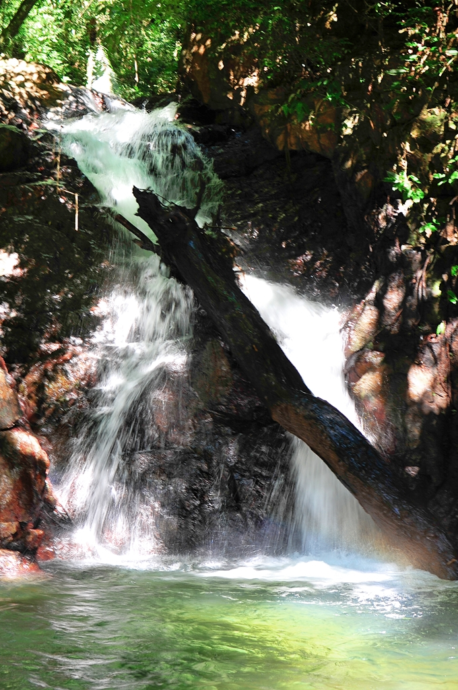

Pequena queda d água, a Cachoeira do Sapatu tem mais ou menos quatro metros de altura e que forma uma linda piscina natural, ideal para banho e grupos de até 20 pessoas. Tem acesso pela estrada que liga Eldorado à Caverna do Diabo à cerca de 35 km do centro da cidade, e está localizada em uma propriedade particular, onde se pode deixar o carro e em seguida caminhar por uma pequena trilha de 150 metros.
Foi eleita a mais bonita do Estado de São Paulo por uma pesquisa realizada pelos telespectadores do Antena Paulista, da TV Globo.
A cachoeira tem uma imensa queda de 53 metros, e sua origem está em uma nascente em área fechada,
que atravessa quatro quilômetros no interior da Caverna do Diabo.
O acesso mais curto para a bela cachoeira é uma caminhada de dificuldade média (Trilha do Jacaré) - com duração de até 40 minutos -
que passa por piscinas naturais com águas cristalinas e três quedas menores.